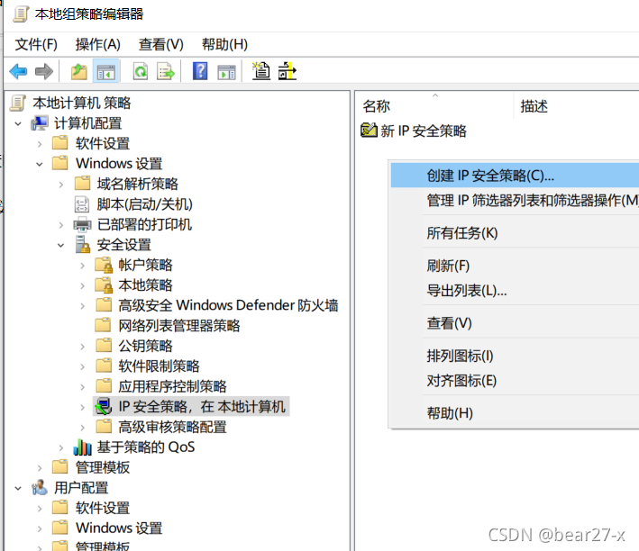
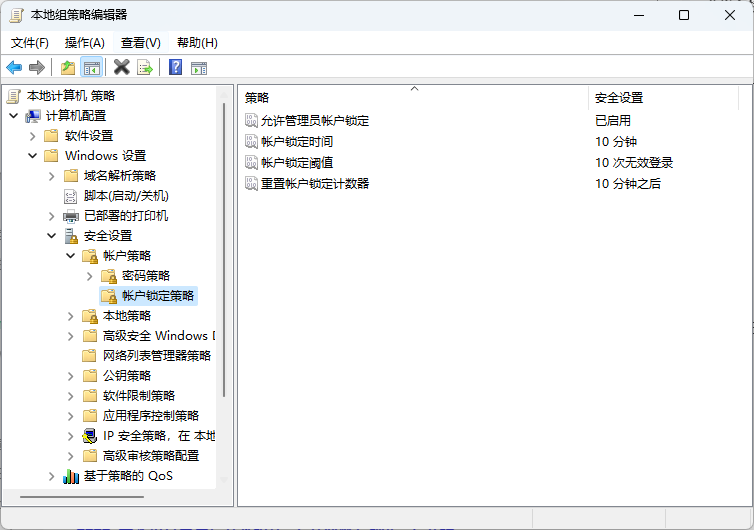

Windows策略组维护
administrator账号改名
Windows超级管理员账号administrator拥有权限高，容易被有心人用穷举法密码破解，我们可以利用组策略对administrator账号进行改名。
路径：”计算机配置” > “Windows设置” > “安全设置” > “本地策略” > “安全选项” > “账户：重命名系统管理员账户”:
系统安全审核
安全审核是Windows最基本的入侵检测方法，当有人尝试对系统进行某种方式入侵的时候(如尝试用户密码,改变帐户策略和未经许可的文件访问等等)，都会被安全审核记录下来。
路径：”计算机配置” > “Windows设置” > “安全设置” > “本地策略” > “审核策略”:
禁用USB读取
为了电脑安全，很多企业都选择利用组策略禁用USB接口，从而禁止U盘、移动硬盘的使用。
路径：“计算机配置” > “管理模板” > “可移动储存访问” > “可移动磁盘”:
禁止修改桌面
利用组策略达到禁止别人改动桌面某些设置的目的，将下面组策略设置界面截屏，在截图中红圈圈出修改项
路径：”用户配置” > “管理模板” > “桌面” :
ip筛选器
1.利用IP筛选器关闭端口2745
路径：”计算机配置” > “Windows设置” > “安全设置” >”IP安全策略” > 右键”管理IP筛选器列表….”

2.出于安全考虑，需要对服务器计算机配置规则：“禁止工作站计算机访问本机任何程序或者端口，暂不启用此规则”。
隐藏上次登录的用户信息
用户启动主机系统时，登录界面显示上次登录用户名，只需输入密码。恶意攻击者只需对密码进行猜测，无需猜测用户名，为攻击提供方便。 我们可以通过组策略屏蔽之前登录的用户信息。
路径：”计算机配置” > “Windows设置” > “安全设置” > “本地策略” > “安全选项” > “交互式登录：不显示上次登录”
状态：已启用
显示详细的开关机信息
默认情况下，win10系统关机的时候只会显示“正在关机”，不会显示正在关闭的程序或者服务，可以通过组策略显示详细的关机（或开机）过程，方便出现系统异常的故障排查。
路径：”计算机配置” > “管理模板” > “显示非常详细的状态信息”
状态：已启用
禁止修改IE主页
浏览器主页经常被一些程序更改带来安全隐患，可以使用组策略禁止IE浏览器更改主页设置。
路径：”计算机配置” > “管理模板” > “Internet explorer” > “禁用更改辅助主页设置”/“禁用更改主页设置”
自定义“访问被拒绝”错误信息
路径：”计算机配置” > “管理模板” > “系统” > “访问被拒绝协助”
要求设置当用户登录错误 5 次时账户锁定 5 分钟
路径：”计算机配置” > “Windows设置” > “安全设置” （即”本地安全策略”）> “账户策略” > “账户锁定策略”

关闭发布共享文件夹的权限
路径：”用户配置” > “Windows设置” > “管理模板” > “共享文件夹” > “允许发布共享文件夹”
赋予远程关机权限
路径：”本地安全策略” > “本地策略” > “用户权限分配” > “从远程系统强制关机”
日志写满自动备份
路径：”计算机策略” > “管理模板” > “Windows组件” > “事件日志服务” > “系统” > “日志文件写满后自动备份”
不允许内核级打印机驱动
路径:”计算机策略” > “管理模板” > “打印机” > “不允许安装使用内核模式驱动程序的打印机”